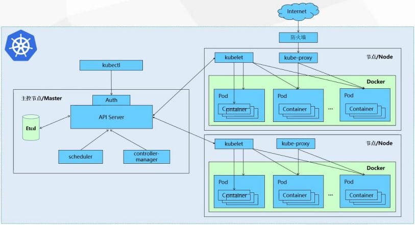

未使用K8S前的情况:
1.开发人员遇到的状况:
a..一个应用服务耦合多个服务，用宿主机或虚拟机都需要管理各个主机的信息。
b.服务在本地能跑，换个本地就crash。
c.资源没有良好的把控，大家再拉资源，A资源坏了，影响到B资源，或是C资源占用太多，影响其他应用服务。
2.运维人员遇到的状况:
a.应用服务死了，需要频繁重启。
b.手动帮应用升级。
c.手动资源管理与配置。
对两者来说，都是增加开发成本。
使用Kubernetes后
- kubernetes是Google开源的调度系统，可用于大规模容器管理，有自动部署、自动扩容、和管理容器的功能。
- 利用容器间的网络或RPC通信机制，将各部件集成为集群，其中有一个是master节点，负责管理整个集群。
下图是k8s主要部件组成:

- master主节点:
k8s cluster的中央，负责api管理工作、追踪各服务的健康状态、协调工作，与编排各组件间的沟通。
组件有:API Server，controller-manager，scheduler，etcd 等
2.node普通节点:
k8s干活的工作节点，主要执行master给的需求。ex:建立pod 删除pod 等
组件有:kubelet、kube-proxy、container、CNI CRI CSI等
- 自动部署:
采用yuml文件编辑，可在不同node随时部署相同应用。
- 自动修复
能在应用服务挂了后自动重启或node挂了后重新调度。
可以检查node的健康状态，执行相应的行为(shut down or restart)。
- 水平扩展
可以手动扩展或自动监测cpu的资源使用状态。
- 服务发现与负载均衡
采用内部的kubeDNS为Service配置DNS名称，并允许集群中的client使用该名称对Service访问，而Service可以通过iptables或ipvs内建立负载均衡。
- 滚动更新、回滚与自动发布
更新时能探测pod状态，等到新pod完成上线后，把旧的pod干掉。
如果新的pod错误，会执行回滚操作，能确保集群内部不会同时杀死全部的pod。
- ConfigMap与Secret设置
提供config可以配置参数，解耦容器与配置。
提供sercret储存用户敏感信息。